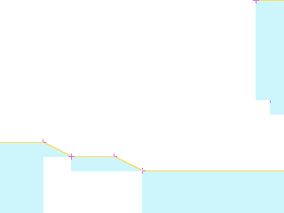
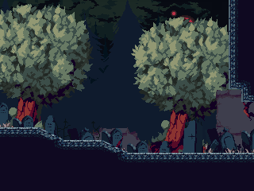

rmGarden08B
ROOM_165_S002 · ROOM 165 · rectangle [320, 0, 320, 240]


Статическая реконструкция v4; не native gameplay screenshot. Голубой: маски; жёлтый: опоры; розовый: pivot.
Исходный OBJT sprite_index, кадр 0 — исследовательский кандидат

Не исполнены native Create/Step/Draw, shaders, FSM и динамические spawn paths.
Готовность
Статическая основа: ready. Полная native-сцена: blocked_native_audit. Игровая сборка: не создана.
Переработать только подтверждённые статические визуальные слои под будущую авторскую игру. Сохранить сетку, границы, читаемость опор и места стыков. Новые сюжет, сцены и рисунки ещё не утверждены.
Зависимости
Future art direction and target asset classifier
Рабочая очередность предложена по связности. Исполнитель: художница; личность, сроки и новые рисунки не назначены.
Depth слои: 5, 4, 3, 2, 0. Опоры и ограничения: точные ROOM transforms и отдельные авторские маски; соседство не переосмыслять.
Входы, выходы и соседи
Входы: E164_03
Выходы: E165_00
{"section": "ROOM_165_S001", "kind": "shared_image_boundary", "direction": "left", "physical_passage": "unknown; drawing boundary is not a door"}
{"section": "ROOM_164_S005", "room": 164, "edge": "E165_00", "kind": "authored_transition", "direction": "right", "conditions": "room-level gate evidence; not evaluated", "source_anomaly": null}
Исходные условия и механизмы комнаты
[]
Проверенные assetID
Кандидаты и блокеры
нет локальных кандидатов; глобальные runtime paths не доказаны
Полные авторские placements ↗ · Native-аудит ↗ · Очередь и возвраты ↗